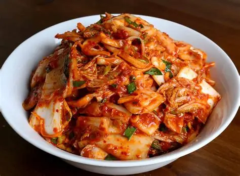
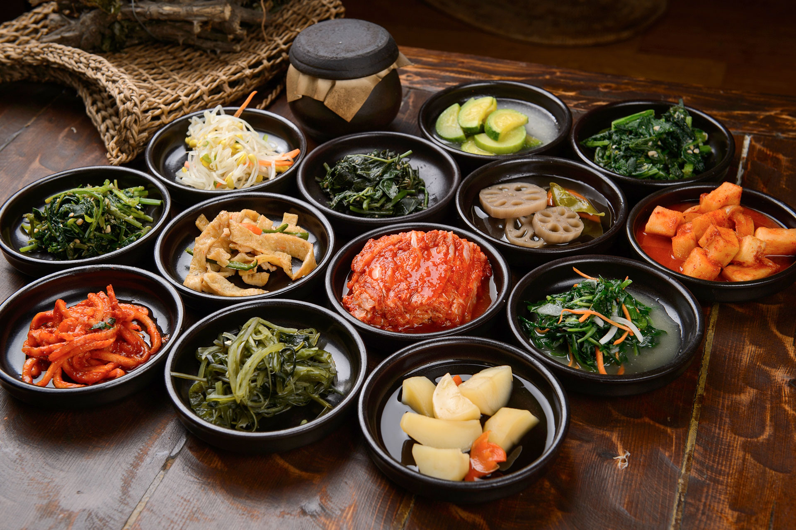

A culinária coreana é conhecida pela combinação de sabores intensos, ingredientes fermentados e refeições compostas por vários acompanhamentos.
Kimchi: vegetais fermentados e temperados, especialmente acelga e rabanete, muito presentes no cotidiano.
Arroz: é uma das bases das refeições e costuma acompanhar sopas, carnes e vegetais.
Banchan: pequenos pratos de acompanhamento servidos à mesa, como vegetais temperados e preparações fermentadas.
Pratos populares: bibimbap, uma combinação de arroz e diversos ingredientes; bulgogi, carne marinada e preparada na grelha; e diferentes sopas e ensopados.
Temperos: alho, óleo de gergelim, molho de soja e pastas fermentadas, como gochujang e doenjang, são bastante característicos.
Fermentação: é uma característica marcante da tradição culinária coreana e ajuda a produzir sabores complexos.
Em resumo: a cozinha coreana valoriza o equilíbrio entre arroz, vegetais, carnes, sopas e acompanhamentos, destacando sabores picantes, salgados, fermentados e umami.
Como o Kimchi é feito?
Algumas informações:
Kimchi
O povo coreano, hoje dividido entre o norte comunista e o sul capitalista, compartilha uma antiga tradição gastronômica em que vegetais, juntamente com arroz, peixe e carne, são ingredientes básicos.
O inverno rigoroso da Península Coreana, com temperaturas que chegam a -20 °C em algumas regiões, favoreceu a prática da fermentação para preservar o teor nutricional dos vegetais nos meses mais frios do ano.
Especialmente no outono, as mulheres coreanas costumam fermentar espinafre, rabanete, folhas de gergelim ou pepino em casa.
Mas há um vegetal que ocupa um lugar especial entre os demais: a acelga, ou couve chinesa, principal ingrediente do kimchi.

Figura 1 - Kimchi
Como o Banchan é feito?
Algumas informações:
Banchan
Banchan é um termo amplo para os acompanhamentos da comida coreana.
O VISITKOREA, portal oficial de turismo da Coreia do Sul, explica que uma refeição coreana costuma reunir diferentes pratos em pequenos recipientes ao redor do arroz e de outros elementos da mesa.
Esses acompanhamentos são chamados de banchan.
Isso significa que banchan não é sinônimo de uma receita específica.
Uma mesma refeição pode reunir preparações fermentadas, vegetais temperados, itens refogados, cozidos, grelhados ou conservados.
O conjunto muda bastante de uma casa para outra e também conforme os ingredientes disponíveis.

Figura 2 - Banchan
Minha família assiste muito dorama, por isso eu tenho tanto interesse na Coreia do Sul. O país é muito bonito e eu sempre quis visitá-lo.